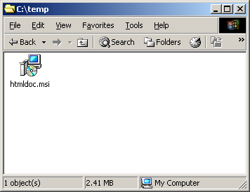
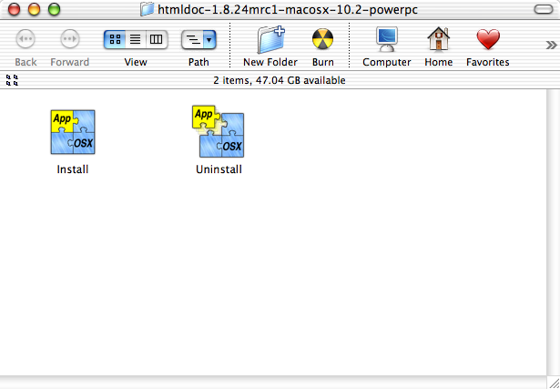

Chapter 1 - Installing HTMLDOC
This chapter describes the steps needed to install the commercial version of HTMLDOC on your system. If you are installing HTMLDOC from source code, please see Appendix D, Compiling HTMLDOC from Source.
Requirements
HTMLDOC requires approximately 4MB of disk space and one of the following environments:
- Microsoft Windows® 2000 or higher
- MacOS® X 10.2 or higher
- Linux® 2.4 or higher
- Solaris® 7 or higher
HTMLDOC may run on other platforms, however we do not provide packages for platforms other than those listed.
Installing HTMLDOC
The following instructions describe how to install the HTMLDOC software on your system.
Installing HTMLDOC on Microsoft Windows
HTMLDOC is provided as a Microsoft installer file under Windows. Insert the CD or double-click on the htmldoc icon in the Explorer window to install HTMLDOC under Windows using the Microsoft software installation wizard (Figure 1-1).

Figure 1-1: The Microsoft software installation wizard
Installing HTMLDOC on MacOS X
Double-click on the Install icon in the Finder window to start the software installation wizard (Figure 1-2) and follow the installer prompts.

Figure 1-2: The software installation wizard
Installing HTMLDOC on Linux
Double-click on the htmldoc-linux-intel.rpm icon or run the following command to install HTMLDOC on Linux:
rpm -i htmldoc-linux-intel.rpm ENTER
Installing HTMLDOC on Solaris
Run the following command to install HTMLDOC on Solaris SPARC:
pkgadd -d htmldoc-solaris-sparc.pkg ENTER
Run the following command to install HTMLDOC on Solaris Intel:
pkgadd -d htmldoc-solaris-intel.pkg ENTER
Licensing HTMLDOC
Before you can use HTMLDOC, you must license it. When you first run HTMLDOC, the license dialog (Figure 1-3) will appear.

Figure 1-3 - The HTMLDOC License Dialog
Click on the Update License button to show the license manager window (Figure 1-4).

Figure 1-4 - The HTMLDOC License Dialog
Enter the license key that was emailed to you or came on the inside of the HTMLDOC CD-ROM case and click on the OK button. Click on the Close button to start using the software.
Uninstalling HTMLDOC
The following instructions describe how to remove the HTMLDOC software from your system.
Uninstalling HTMLDOC on Microsoft Windows
Open the Control Panel window and double-click on the Add/Remove Software icon. When the available software list is displayed, select HTMLDOC and click on the Remove button.
Uninstalling HTMLDOC on MacOS X
Double-click on the Uninstall icon in the Finder and follow the prompts.
Uninstalling HTMLDOC on Linux
Run the following command to remove HTMLDOC from your Linux system:
% rpm -e htmldoc ENTER
Uninstalling HTMLDOC on Solaris
Run the following command to remove HTMLDOC from Solaris:
% pkgrm htmldoc ENTER